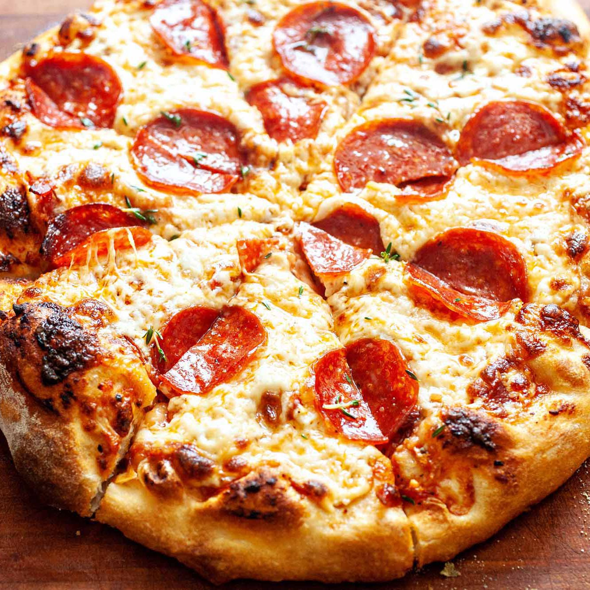

Pepperoni Pizza

Learn how to make this easy and tasty treat that's big enough to serve to the whole family!
Ingredients!
Sauce Ingredients
- 1/2 12 oz can of Tomato Paste
- 1 teaspoon dried oregano
- 1 teaspon dried basil, crushed
- 1/2 teaspoon garlic powder
- 1/2 teaspoon onion powder
- 1/2 teaspoon sugar
- 1/2 teaspoon salt
- 1/4 black pepper
Crust Ingredients
- 3 1/4 cups all-purpose flour
- 2 >25 oz pizza crust yeast
- 1 tablespoon sugar
- 1 1/2 teaspoons of salt
- 1 1/3 cups of very warm water
- 1/3 cup oil
Toppings
- 1 6oz pack of pepperoni
- 1 cup of shredded mozzarella
Cooking Instructions!
- Combine all sauce ingredients with 1/2 cup water in bowl; set aside flavors to develop while making crust. Freeze remaining paste.
- Combine 2 cups of flour with the dry yeast, sugar, and salt. Add water and oil then mix until well blended. Gradually add enough flour for sticky dough.
- Knead dough for 4 minutes on floured surface until smooth and elastic. Add moore flour if needed.
- Divide dough in half. Pat each half, with floured hands, into a 12-inch greased pan.
- Preheat oven to 425. Top crusts with sauce, pepperoni, and cheese.
- Bake for 18 to 20 minutes until crust browned and cheese bubbly